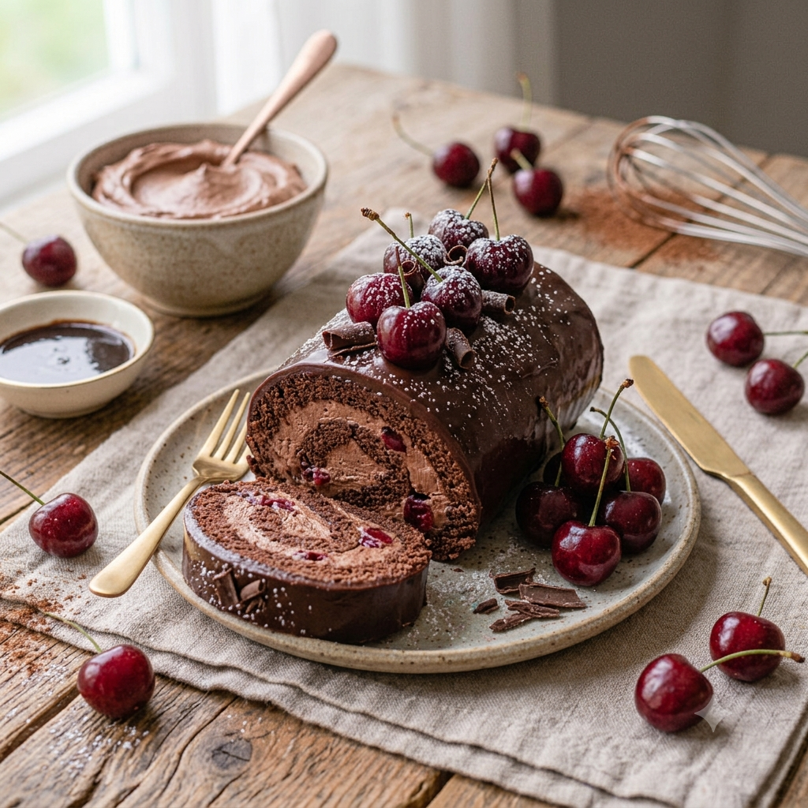

RECETA #023
Brazo de Chocolate

Ingredientes — Biscocho
- 200 ml de aceite vegetal
- 1/3 de taza de harina (175 g)
- 1/4 de taza de cocoa (75 g)
- 1 cucharada de polvo para hornear
- 1/4 de cucharadita de sal
- 4 huevos separados
- 1/2 cucharada de vainilla
- 3/4 de taza de azúcar
- Papel encerado (papel Estrella), c/s
Para el relleno
- 200 ml de crema para batir
- 6 cucharadas de azúcar glass cernida
- 3 cucharadas de cocoa cernida
Adornos
- Azúcar glass en polvo
- Cerezas, c/s
Procedimiento
Engrasa y enharina una charola rectangular con el aceite y coloca un papel encerado encima.
Cierne la harina, la cocoa, el polvo para hornear y la sal. Reserva.
Bate las yemas, la vainilla y un cuarto de taza de azúcar hasta que espese y forme un listón al levantar el batidor. Reserva.
Bate las claras a punto de turrón y agrega poco a poco el resto del azúcar hasta que se formen picos firmes.
Envuelve suavemente las claras con la mezcla de las yemas.
Vierte sobre la charola y hornea a 180°C durante 10 minutos aproximadamente.
Retira del horno y voltea sobre un trapo espolvoreado con azúcar glass. Retira el papel con cuidado y deja enfriar.
Para el relleno: bate la crema y poco a poco añade el azúcar glass y la cocoa. Bate hasta que la crema espese y se formen picos.
Cubre el pan con la crema de cocoa, solo una porción, y enrolla suavemente. Cubre el rollo con el resto de la crema y refrigera por 10 minutos.
Coloca el rollo en un platón de presentación, espolvorea cocoa por encima y decora con unas cerezas.